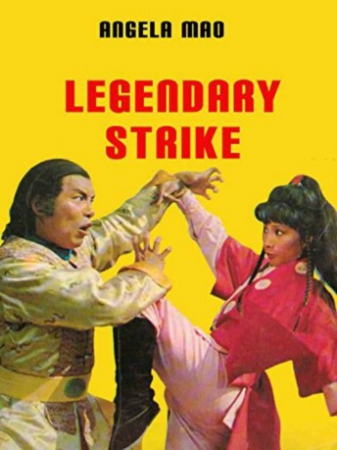

Also known as:The Legendary Strike (original title)
Country:Hong Kong, 90 minutes
Spoken languages:Cantonese
Genres:Action, Adventure
Director(s):Huang Feng
Writer(s):Gu Long
Video Codec:Unknown
Number: 2653


Certification:
Storyline:
The plot deals with a search for a valuable pearl, dubbed the Buddha's Relic, which is sold to an unwitting Japanese emissary by a corrupt Ching Dynasty prince who seeks to steal it back for his own purposes.
Cast:


Medium: VHS tape,
Loaned: No
Aspect ratio: Unknown